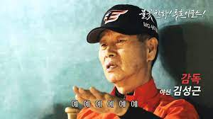

한화의 김성근 감독님 사랑해
밈으로도 나름 유명한 곡이다. 주로 케인과 그 관련 채널에서 많이 보인다.
케인은 과거 본인이 한화 이글스의 팬이자 김성근 감독의 팬이었다고 밝혔다. 케인의 과외 제자 출신인 또라에몽이 과거 케인이 카카오톡 프로필 사진을 김성근 감독 사진으로 한 적이 있다고 밝히기도 했다.
현재는 김성근 감독에 대해 논란이 터져 증오하고 있다고. 어쨌든 이 응원가가 케인과 연관도 있고 케인이 증오한다는 점에서 케인을 놀려먹기에 좋은 영상이 되었고 현재 케인의 이름 있는 밈 중 하나가 되었다.
다른 유명한 케인 밈인 타지리와 함께 변화구 형태로 많이 도네이션으로 올라간다. 케인 방송 도중 이것이 영도로 뜨면 채팅창은 'ㅖㅖㅖㅖㅖㅖㅖㅖㅖㅖㅖ' 혹은 수리 이모티콘으로 도배된다. 김성근 변화구가 나왔을 때 케인 반응도 볼만하다.
